Göteborgs bostadsmarknad
1 april 2025
När jag försökte uppskatta värdet på min lägenhet slutade det med att jag byggde en liten crawler som samlade in historisk data från en av de stora bostadsförmedlingssidorna i Sverige. Jag läser ibland rapporter om hur bostadsmarknaden utvecklas, men jag känner ofta att jag hellre vill se den faktiska datan själv – gärna för ett mer avgränsat område.
Innan vi ser på alla graferna så kommer en graf som plottar KPI gentemot Riksbankens referensränta. Poängen med den här grafen är att under de senaste 3-4 åren har vi haft hög inflation, vilket har fått riksbanken att höja referensräntan. Det här har såklart en påverkan på bostadspriserna. Det är nog en stor del av förklaringen för varför vissa av de graferna som kommer har lite drastiska svängningar de senaste åren.
Grafen är skapad av mig men datan kommer från SCB och Sveriges Riksbank.
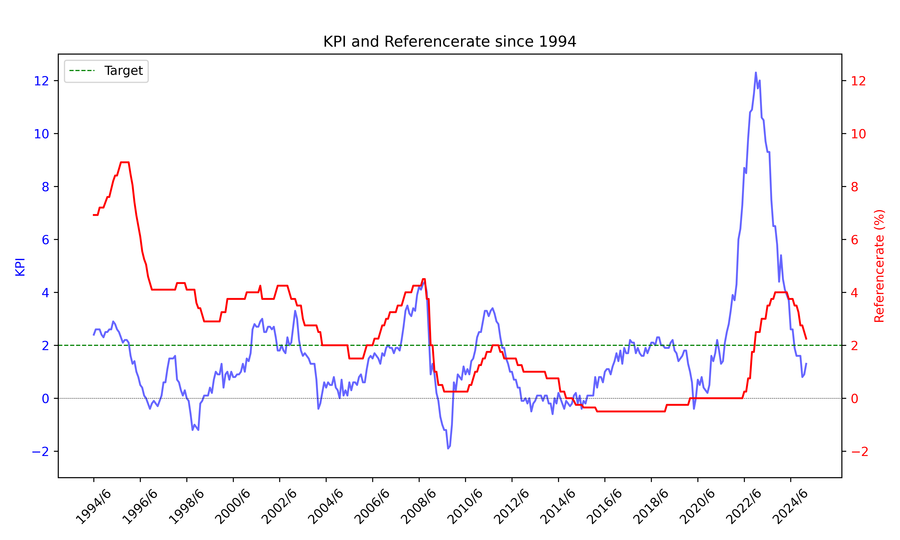Från enbart Göteborg har vi cirka 70000 datapunkter. Om vi bryter ned det över hur många fastigheter som har sålts per år får vi den här grafen
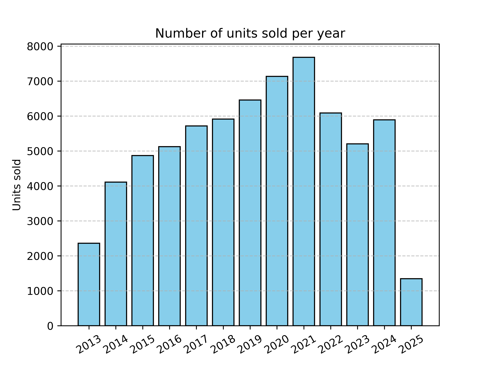Om vi bryter ned det efter vilka olika typer av fastigheter det rör sig om så får vi den här grafen
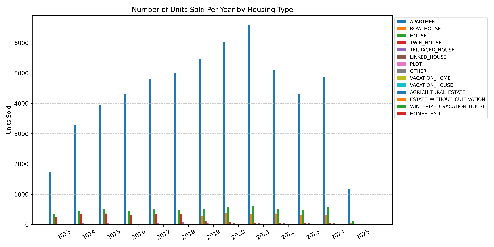Vi ser att majoriteten av alla sålda objekt är lägenheter. Jag gissar att det här är fallet i alla större städer (Göteborg är ju en storstad med Svenska mått). För att få plats med så många människor på samma yta måste man bo i lägenheter då de är mycket mer platseffektiva.
Om vi plockar bort all data som inte rör en lägenhet så kan vi bättre se vad för andra typer av fastigheter som sålts.
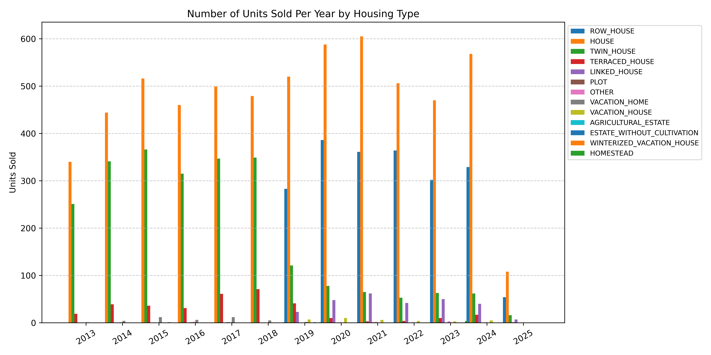Det verkar som att antalet försäljningar av hus har förblivit relativt oförändrat från år till år. Något som är intressant är att kategorin för TWIN_HOUSE tappar popularitet efter 2018 och blir ersatt av ROW_HOUSE. Jag antar att ett parhus även är ett radhus, fast där längden är 2. Jag gissar att dessa kategorier matas in av mäklarna som stoppar upp annonserna, så det är såklart lite inconsistencies. ROW_HOUSE förekommer inte alls före 2019, och när den blev tillagd verkar det som att mäklarna föredrog den framför TWIN_HOUSE.
Hur stora är fastigheterna som har sålts i Göteborg? Storleken på en bostad benämns i kvadratmeter. Om vi plottar storlekarna som ett histogram så får vi denna grafen
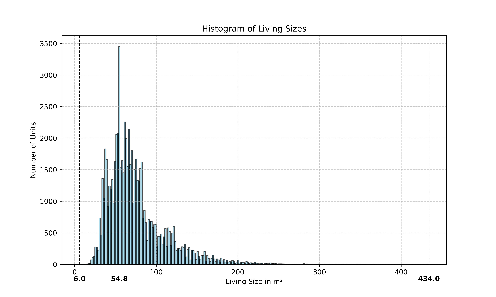Varje stapel representerar inte en ensam storlek, utan ett spann av storlekar. I det här fallet representerar varje stapel ett spann på 1.71 kvadratmeter, så toppen vid 54.8 kvadratmeter hänvisar faktiskt till spannet av lägenheter vars storlek är mellan 54.8 och 56.51 kvadratmeter. Trots att mina förväntningar var att det skulle finnas en tydlig peak så trodde jag inte att en ensam stapel skulle stå ut så här. Lite poänger att ta med sig
Den vanligaste storleken av fastigheter som såldes i göteborg de senaste 12 åren har varit mellan 54.8 och 56.51 kvadratmeter
En solklar majoritet av alla fastigheter som såldes var under 100 kvadratmeter
Den minsta fastigheten som såldes var bara 6 kvadratmeter, medans den största var 434 kvadratmeter
Om vi tittar närmare på datapunkten för fastigheten som var 6 kvadratmeter så ser vi att det är en sjöbod som såldes under 2014 för 795 000:-.
Om vi plottar antalet rum som ett histogram så får vi denna grafen
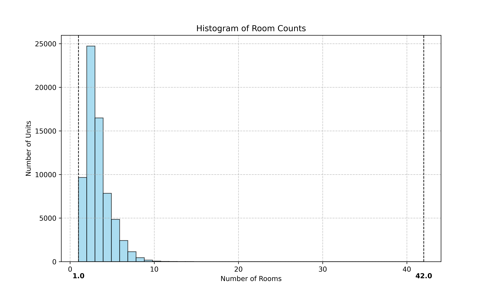Det blir väldigt tydligt att de två vanligaste antalen rum som en såld fasighet i Göteborg har haft är 2 eller 3 rum. I datasettet verkar det finnas en fastighet som har 42 rum. När jag tittar närmare på den här enskilda punkten så är det egentligen en lägenhet i centrala Göteborg på 42 kvadratmeter. Det verkar som att mäklaren har stoppat in siffrorna fel. 42 kvadratmeter indikerar att det mest troliga är att det är en lägenhet som har 1 eller 1.5 rum, eller att det är en väldigt liten 2a.
Eftersom försäljningen av lägenheter är en sådan stor del av datasettet så plottar vi samma bilder utan dem. Nedan följer två grafer som är renderade ifrån enbart datapunkter som tillhör kategorin HOUSE.
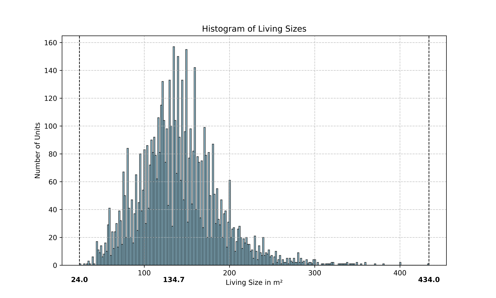 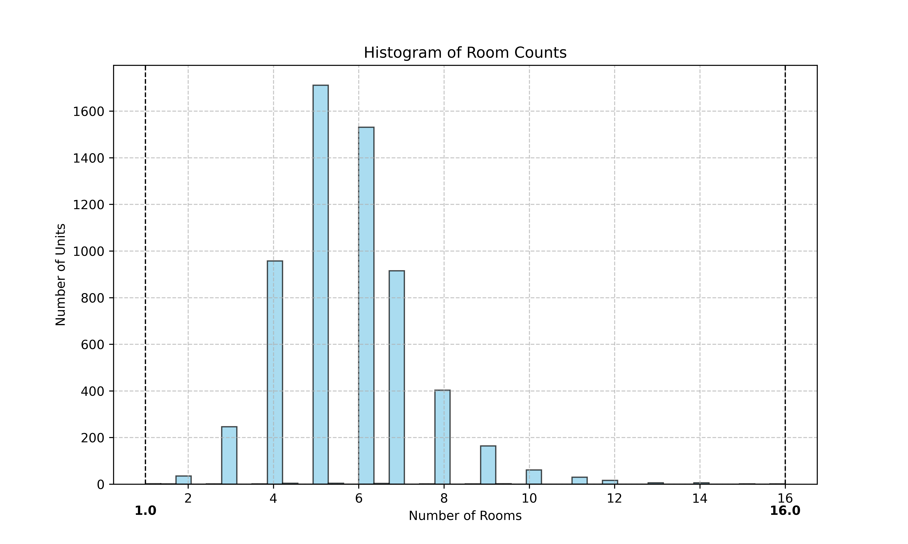
Den vanligaste storleken på ett hus är mellan 134.7 och 136.3 kvadratmeter
Storleken på hus är mer jämnt fördelade
Det minsta huset som såldes var bara 24 kvadratmeter, medans det största var 434 kvadratmeter
Det vanligaste antalet rum i sålda hus är 5 och 6, och det största antalet rum i ett sålt hus är 16
När jag tittar närmare på datapunkten för 16-rums huset så ser jag att det är ett hus nära Johanneberg i Göteborg. Huset såldes i januari 2021 för 11 500 000:- SEK. Det har 317 kvadratmeter boarea och ytterligare 143 kvadratmeter biarea. Nedan följer ett histogram över biareor i sålda hus.
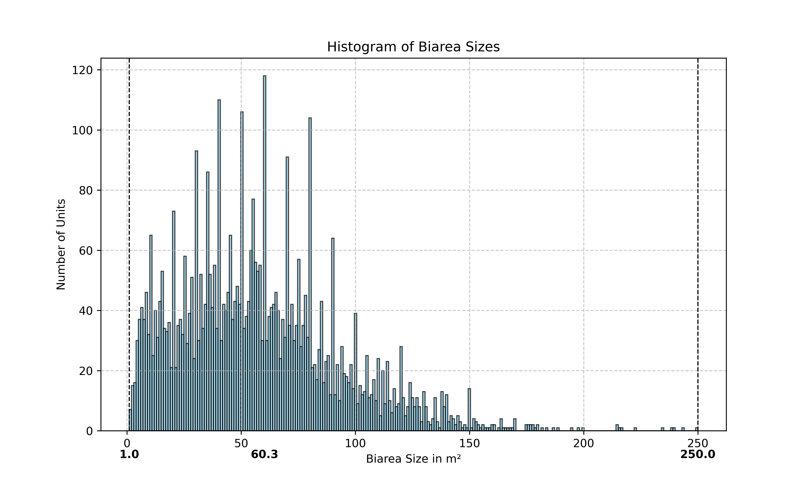Det är inte helt solklart varför vi har dessa tydliga toppar. Det kanske kan vara ett resultat av detaljplaner? En detaljplan i ett område kan ställa krav på hur byggnader (t.ex garage) ska se ut, och då slutar det med att många fastigheter har liknande siffror kanske.
Den största biarean i datasettet är 250 kvadratmeter och tillhör ett hus som såldes i Hovås. Huset har 152 kvadratmeter boarea, och då ytterligare 250 kvadratmeter i biarea. Det såldes 2024 för 9 200 000:- SEK. Eftersom försäljningen är såpass ny finns fortfarande ritningar och liknande kvar i annonsen, och där framgår det att huset har en enorm inredd källare.
Eftersom majoriteten av sålda fastigheter är lägenheter så är det intressant att se hur deras avgifter har förändrats över tid. En bostadrättsförening har ofta lån, varav en bostadrättsinnehavare kan vara känslig mot ränteläget även om denne inte har ett eget bolån. När räntan går upp går förmodligen räntan på föreningens lån upp, och föreningen behöver höja avgifterna för att ha råd med sina lån. Nedan följer en graf som visar hur den genomsnittliga avgiften på sålda lägenheter har förändrats över tid
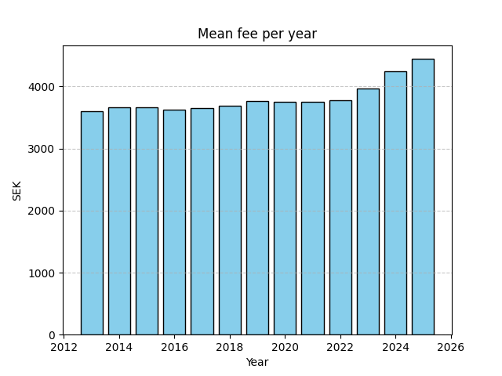De tre senaste åren ser vi att avgifterna har höjts med kanske 15% eller däromkring. Med tanke på den dåvarande inflationen och ränteläget så är det inte förvånande, men ändå intressant att se.
Då datan är av så väldigt varierande karaktär, kan vi enkelt dra slutsatser om priser över tid? Jag tycker att storleken av datasettet kan vara nog för att kunna observera trender över tid utan att behöva anpassa oss för olika storlekar, fastighetstyper, etc. Om jag plottar det genomsnittliga priset per kvadratmeter per månad så får vi denna grafen
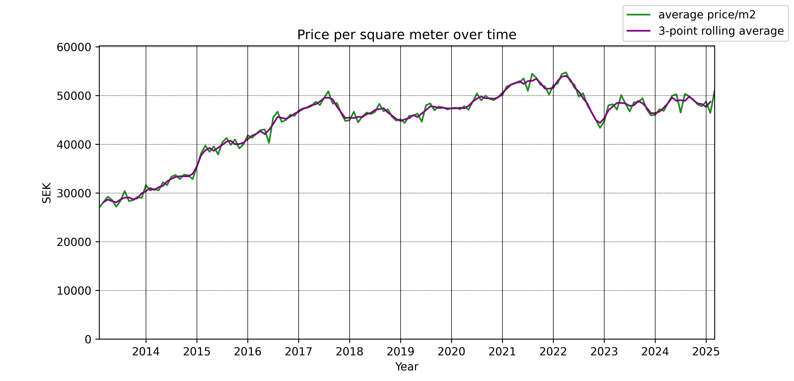Det verkar ha varit en stadig ökning i priser från 2013 och framåt. Detta är någonting som jag själv kommer ihåg från de åren innan jag slog till och köpte min lägenhet 2017. I mitten av 2017 började det framkomma lite oro hurvida vi var i en bostadsbubbla eller inte. Detta hade en liten effekt på priserna, men den effekten avtog ganska snabbt. Pandemin verkar ha haft en liten effekt på priserna i Göteborg, men Putins invasion av Ukraina följt av inflationskrisen har verkligen påverkat priserna.
Om vi plottar priserna på årsbasis istället för månadsbasis får vi denna grafen
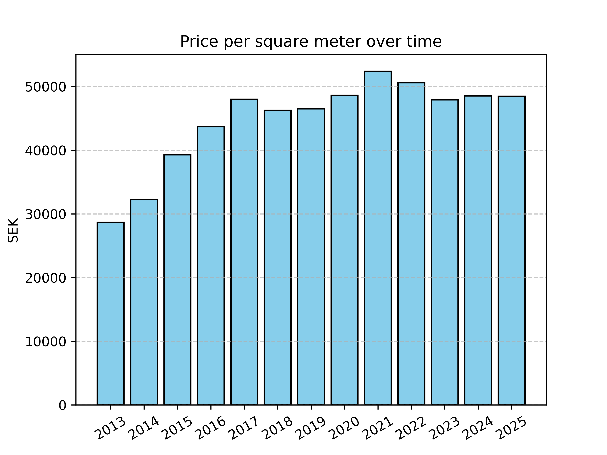Förändringarna per år är mindre dramatiska. Det är dock fortfarande otroligt att se att i t.ex 2014 var det genomsnittliga priset per kvadratmeter ungefär 32 000:-, och bara året efter var det 39 000:-. En ökning på mer än 20%!
Datasettet innehåller data om både utropspris och slutpris. Vi kan se hur utropspris och slutpris skiljer sig åt i grafen nedan
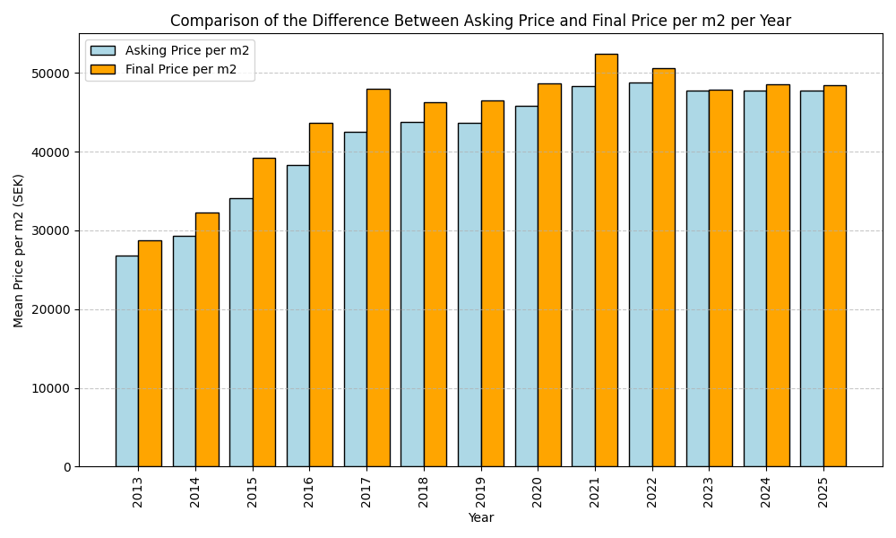Under varje år som vi har data kan vi se att slutpriserna alltid var högre än utropspriserna. Bara nyligen har skillnaden krympt såpass att det nästan har varit tvärtom.
Den genomsnittliga säljaren får mer än vad de bad om. Om vi plottar dessa skillnader (i procent) som ett histogram så får vi denna grafen
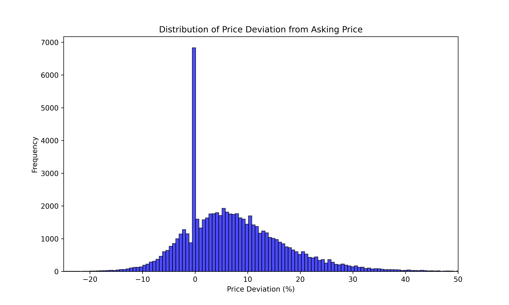
Den vanligaste skillnaden i utropspris och slutpris är 0%, dvs att en fastighet har sålts för vad utropspriset var
Majoriteten av fastigheterna har sålts för mer än vad utropspriset var, men det visste vi redan från den tidigare grafen
Om vi struntar i toppen vid 0% så verkar det som att den vanligaste skillnaden i utropspris och slutpris är ca 6%
Vissa fastigheter sålde för nästan 50% mer än vad utropspriset var, och vissa sålde för nästan 20% mindre
Om vi normaliserar priset mot medianlönen i Sverige för samma år får vi denna grafen. Notera att jag inte kunde hitta medianlön för 2013, 2024, och 2025. Medianlönen för 2024 borde snart vara tillgänglig då det är deklarationstider nu.
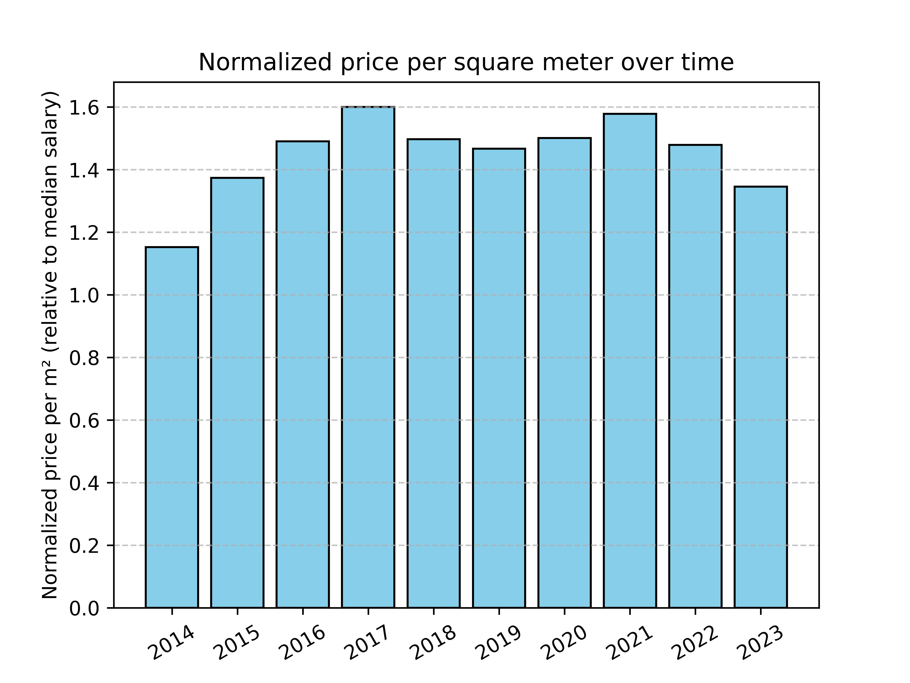
Formen på denna graf är väldigt lik den den där priserna inte är normaliserade
Denna graf bekräftar att priserna faktiskt rör sig upp och ned från år till år, och att t.ex ökningarna inte bara är ett resultat av högre medianlöner. Om priserna bara höjdes i takt med medianlönen så skulle alla staplarna vara lika höga
Slutsumman är att jag hade jättekul med att titta på all denna datan och dessa graferna. Jag är dock helt övertygad om att min lägenhet inte är värd vad jag gav för den 2017, tyvärr. Hör av er om det är någon annan rendering av datan som ni tycker vore intressant att se, så slänger jag upp det här på hemsidan.

{kind=link}
{kind=link}
{kind=link}
{kind=link}
{kind=link}
{kind=link}
{kind=link}
{kind=link}
{kind=link}
{kind=link}
{kind=link}
{kind=link}
{kind=link}
{kind=link}
{kind=link}